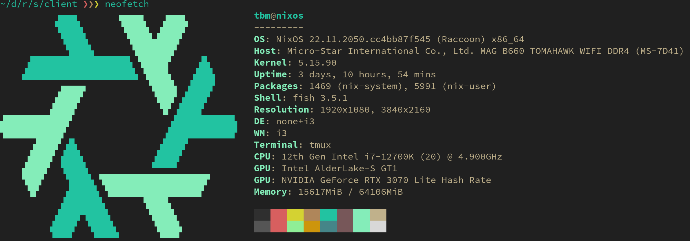

前回購入した PC パーツが届きました。 PC を組み立てて Linux 環境を整えます。
贅沢最高！
準備
少し買い物をします。
- ドライバ
- 普通のプラスドライバ
- 精密ドライバ (M.2 SSD の装着に)
- 普通のプラスドライバ
- USB
- Linux の起動ディスク用 (NixOS を入れます)
- データの移動用 (マザーボードの BIOS 更新ファイルなど)
- Linux の起動ディスク用 (NixOS を入れます)
新環境構築
届いたのはダンボール 2 箱で、一方には PC ケースが、もう一方にはパーツ類が入っています。どちらも電子レンジより軽い！ 気軽に所有できそうです。
PC 組み立て・起動
組み立て手順は ドスパラの組み立てマニュアル に従いました。細かい方法は製品付属の説明書を参照します。あらゆる過程で引っかかったので、組み立てだけで 5 時間以上かかりました。
絶望ポイントを抜粋します:
- CPU 装着の向きが分からない
- CPU ファンの固定台がマザーボードに取り付けられない
- M.2 SSD 装着のための精密ドライバが無い
- GPU とマザーボードの接続方法が分からない
- 配線のやり方が分からない
- 電源が付かない
- 映像が出ない
- Bluetooth が繋がらない
対策
- 持ち上げた蓋の方に印がありました。
- 台の足を広げれば良かったです。
- 大きなドライバで M.2 SSD を装着しました。ネジ穴を潰しそうになりました。
- ケースへの取り付けとマザーボードへの取り付けが同時でした。
- 電源から各パーツにケーブルを繋ぐだけでした。
- フロントパネルの電源ボタンを押していませんでした。
- GPU を取り外すと映像が出ました。また BIOS を更新すると GPU から映像を出せるようになりました。謎です。
- マザーボード付属のアンテナを付けていませんでした。
ずいぶん苦労しましたが、次からはスムーズになると思います。
BIOS の設定
起動後、 BIOS を更新・設定変更します。
- BIOS の更新
MSI マザーボードの BIOS 更新方法 を参考に M-Flash を実施しました。 - USB ブートの有効化
インストールディスク (USB) から起動できるように設定します。 - Secure boot の無効化
インストールディスクには UEFI の署名が無いとかで、一時的に secure boot を無効にする必要がありました。
NixOS のセットアップ
主なリソース
公式マニュアルや Youtube が詳しいので、インストールまではあまり困りません。 /etc/nixos/configuration.nix を編集し、 OS の設定をします。
主な設定
ベター Ubuntu のつもりで無難に設定しましたが、中々思い通りにはなりません。たとえば Kitty ターミナルで日本語入力するには、 fcitx5 を有効にする必要がありますが、まだ成功していません。

Figure 1: neofetch
SSD の破損
3D ゲームをプレイしていたら、 SSD が二度と起動しなくなりました。 2 回 NixOS をインストールすることになるとは……！ 10 日ぐらい設定に忙殺されて、まともに眠れませんでした。
開発環境構築
NixOS には独自の制限があり、整備されたレール以外は途端に難しくなります。たとえばグローバルインストールは基本できませんし、ライブラリのリンクには shell.nix や default.nix が必要です。
まずは制限を把握するところからですね。現在は、急場凌ぎで以下の環境を使用しています。
- Haskell (競プロ環境)
ghcupが利用できません。またnixpkgsにはghc883が無いので、 GHC 8.8.4 を使って凌いでいます。 - Rust (ゲーム開発)
rustupが利用できません。ただ fenix を使えば、ほぼグローバルインストールになりました。リンクには Bevy Engine のshell.nixを参考にし、 nix-direnv でPATHに入れます。 リンカーを LLD に変更する のも忘れずに。 sccache の代わりは、まだ候補を絞れていません。
まとめ
さすが高スペック PC, ビルドが速い！ 1 日が 24.5 時間になったかのようです。エディタの起動すら高速になりました。モニタを買い足せば、もっと快適になるでしょう。
MBP がクラムシェルから解放されました。 iPad は便利ですが、 mac はさらに便利です。 mac を手に入れ直したような気分にもなりました。
さらに 15 インチのサブモニタ、および Kindle Scribe をアームで宙に置いています。贅沢のカンストが見えてきました。